Work
Twelve case studies, newest first: nine demos for local businesses in Saint-Lô, then three real projects. My role, the context and the status of each project are stated.
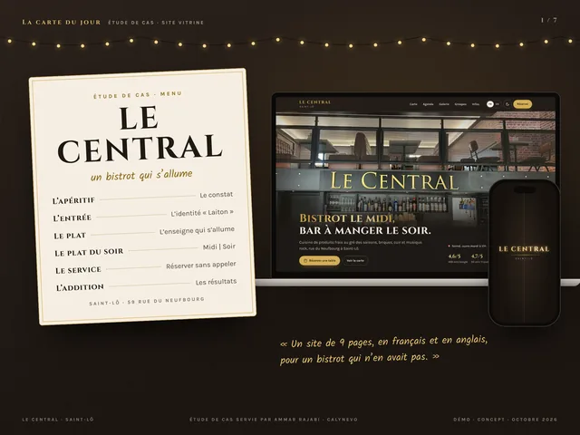
Concept demoBistro-bar · Saint-Lô · 2026
Le Central
A bistro-bar: the sign lights up, lunch and night in one button, and booking in four steps.
View the case study →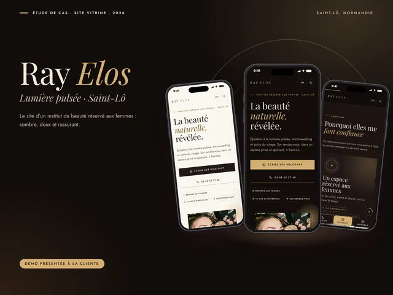
Presented demoBeauty studio · Saint-Lô · 2026
Ray Elos
A women-only beauty studio: reassure, show the results, then message on WhatsApp.
View the case study →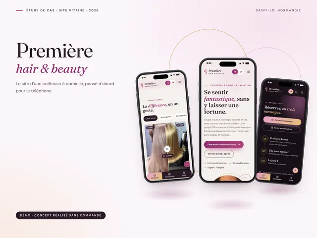
Concept demoMobile hairdresser · Saint-Lô · 2026
Première hair & beauty
A mobile hairdresser: before / after, a 20 km area and booking in three messages.
View the case study →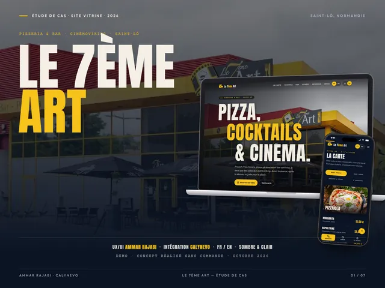
Concept demoPizzeria-bar · Saint-Lô · 2026
Le 7ème Art
A pizzeria-bar next to the cinema: menu, opening hours and booking, at a glance.
View the case study →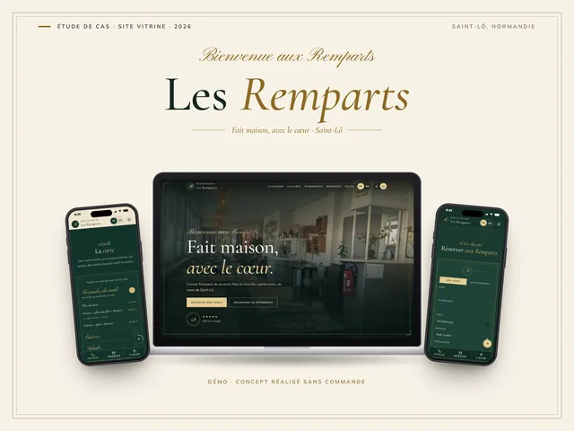
Concept demoRestaurant · Saint-Lô · 2026
Les Remparts
A home-cooking restaurant: menu, events and booking, with elegance.
View the case study →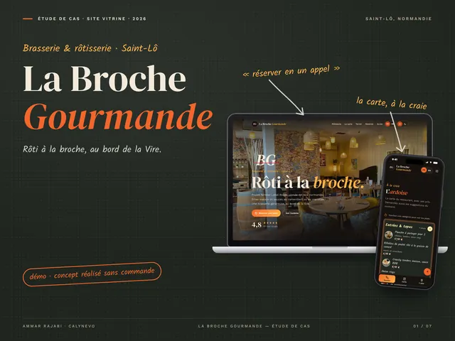
Concept demoBrasserie · Saint-Lô · 2026
La Broche Gourmande
A brasserie-rotisserie: the chalkboard, the fire and local producers, online.
View the case study →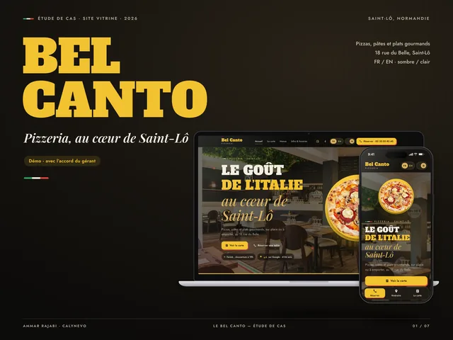
Concept demoPizzeria · Saint-Lô · 2026
Le Bel Canto
A family pizzeria: a 110-dish menu in photos, with a search by ingredient.
View the case study →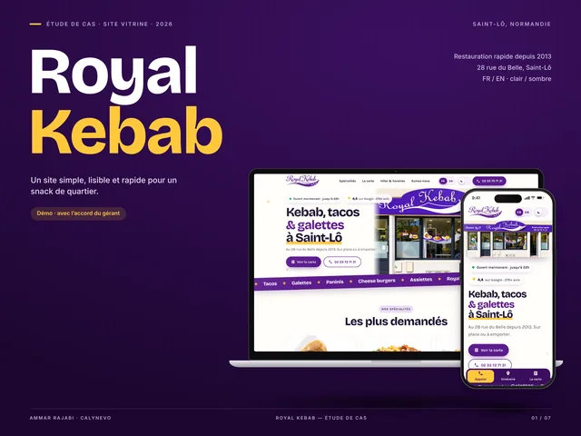
Concept demoKebab shop · Saint-Lô · 2026
Royal Kebab
A local kebab shop: menu, prices, opening hours and a call in one tap.
View the case study →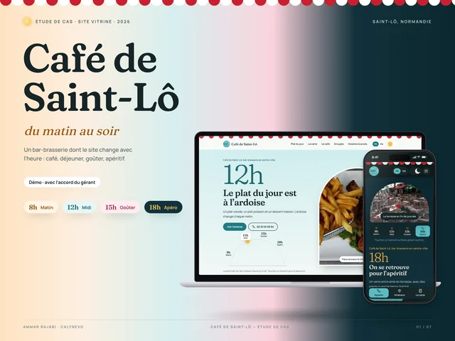
Concept demoBar-brasserie · Saint-Lô · 2026
Café de Saint-Lô
A bar-brasserie whose site changes with the time of day: coffee, lunch, treats, drinks.
View the case study →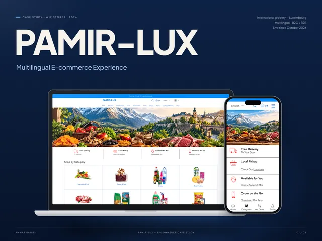
Real projectE-commerce · Luxembourg · since May 2026
Pamir-Lux
A live Wix store: 2,200+ products, 7 languages, B2C and B2B, automation.
View the case study →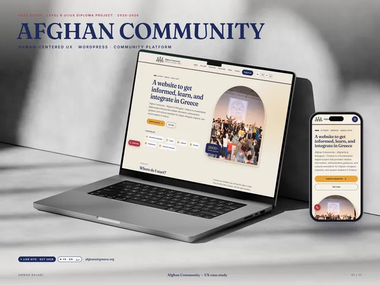
Real projectAssociation · Greece · 2025–2026
Afghan Community
A trilingual platform for Afghans in Greece, from user research to WordPress.
View the case study →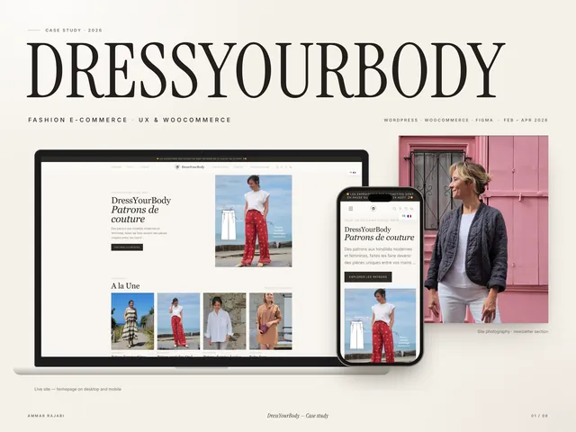
Real projectE-commerce · France · 2026 internship
DressYourBody
A live WooCommerce store, improved page by page during my internship.
View the case study →
Other deliverables.
A selection from the Afghan Community project. Select an image to see it larger.

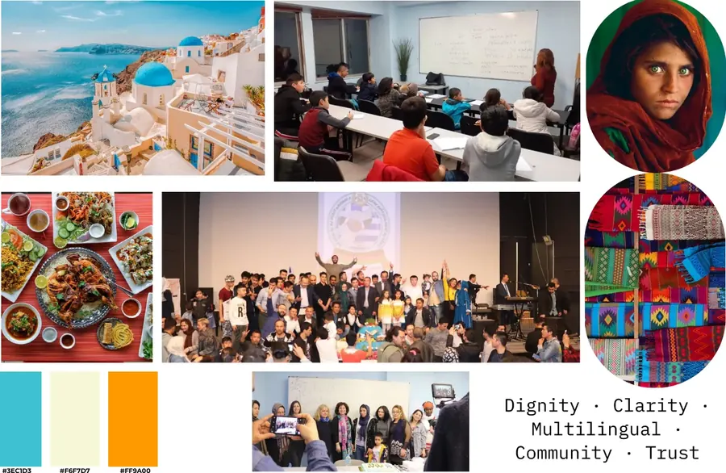
Visual identity Logo, palette, iconography and graphic system.

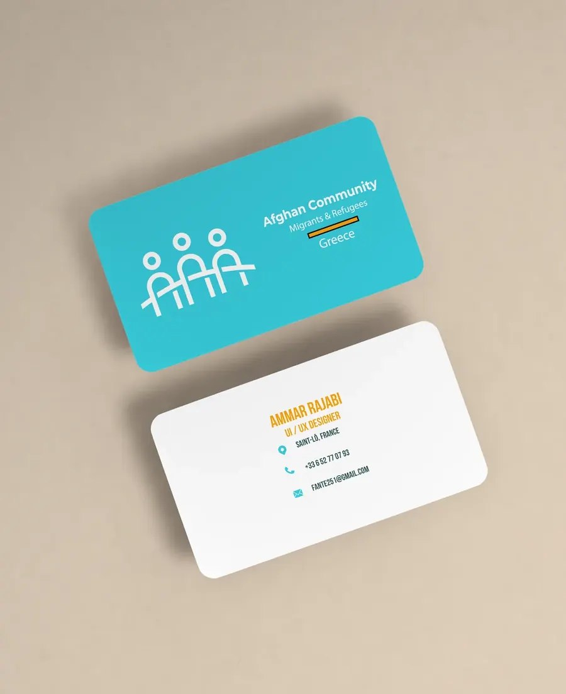
Print materials Brochure, flyer and stationery.

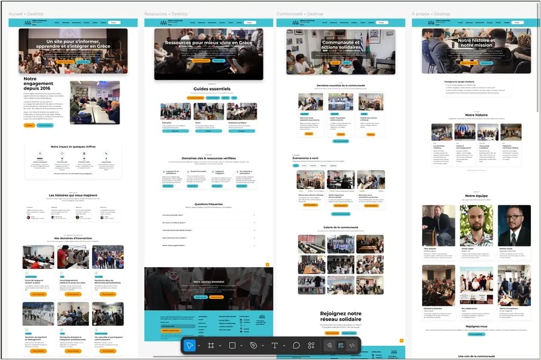
UX and Figma Journeys, wireframes and mockups.

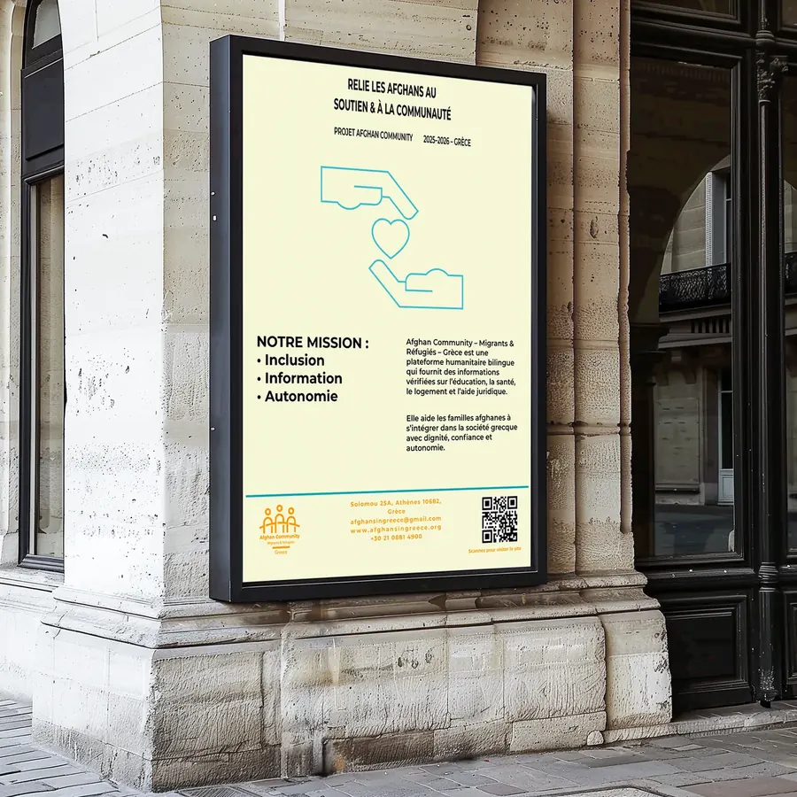
Poster Large format and visual hierarchy.

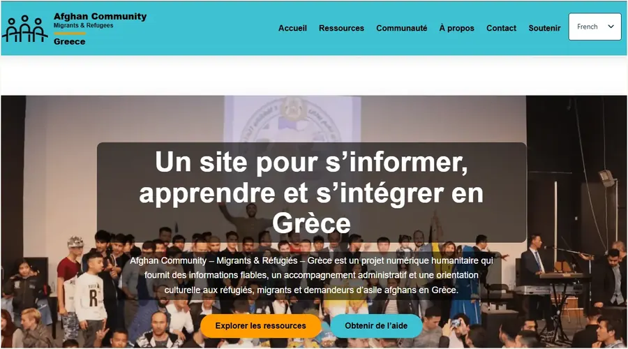
WordPress Afghan Community website build.

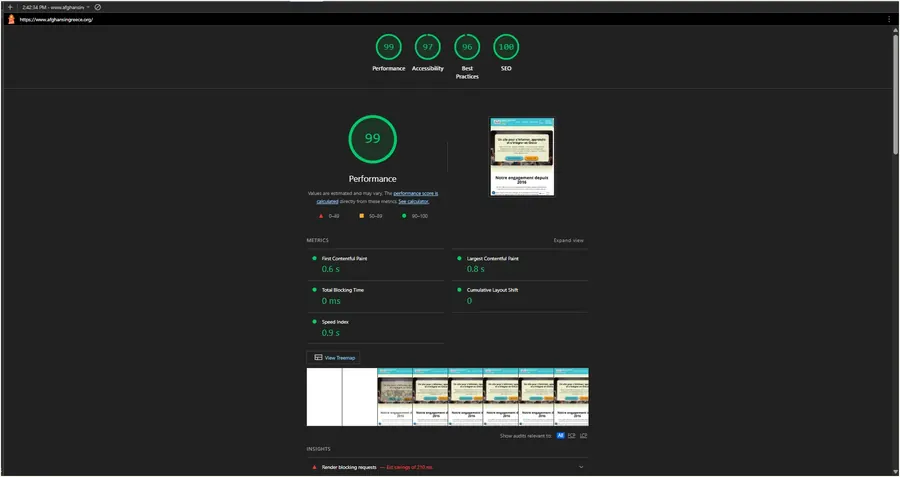
SEO and performance Audits and web quality checks.
Contact
A role, a project or a simple question?
I reply in English or French, usually within 48 hours.